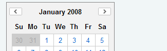

The Calendar Extension enables users to choose one or more dates from a graphical calendar presented in a single-page or multi-page interface. Calendars are generated entirely via script and can be navigated without any page refreshes. They are also highly configurable, with the ability to customize the contents and look of rendered cells using custom renderer plugins.